#SuperStraight
March 7th, 2021
The second non-gay thing to happen on Reddit this year, the first being Wall Street Bets, has just happened. Fed up with trannies shoving their tranny bullshit in everyone's faces, specifically the "you're a bigot if you won't suck my female penis," routine, some guy made a video calling himself "SuperStraight," as in he is only attracted to woman who were born with vaginas. This is his sexual identity, and criticism of this is literal violence.
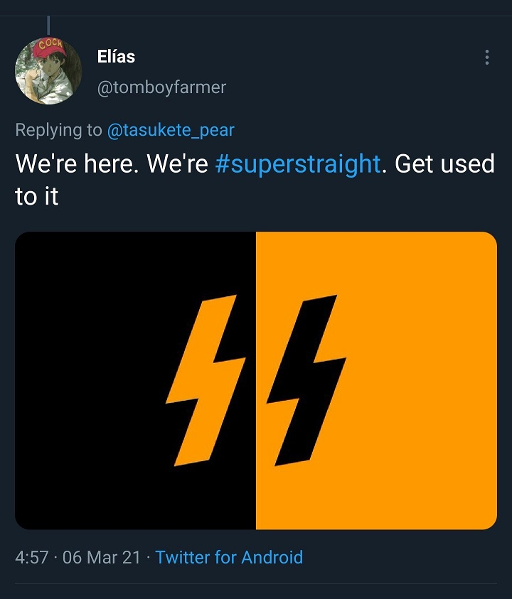
I have to admit, this was a breath of fresh air, and it shows just how important it is to give people the vocabulary to defend themselves. I'd go into the actual text, but honestly, the pictures speak for themselves.
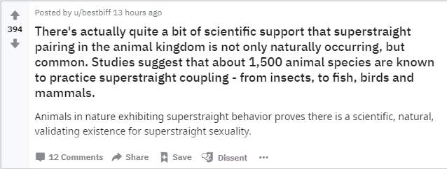
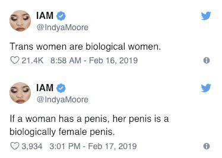
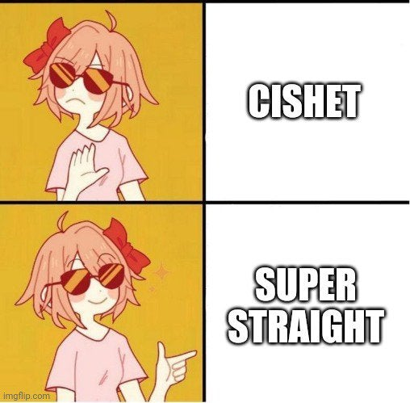
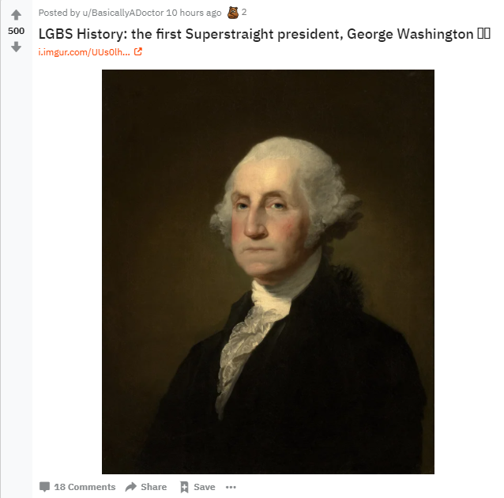
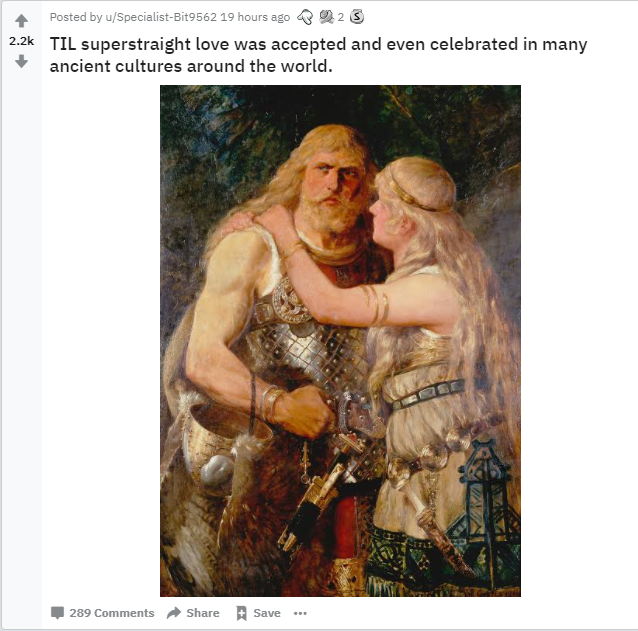
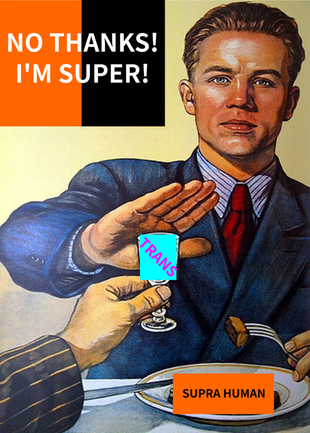
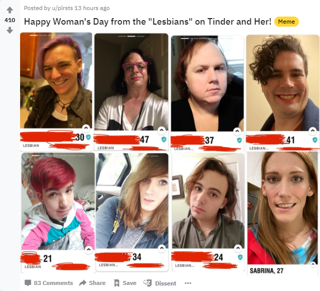
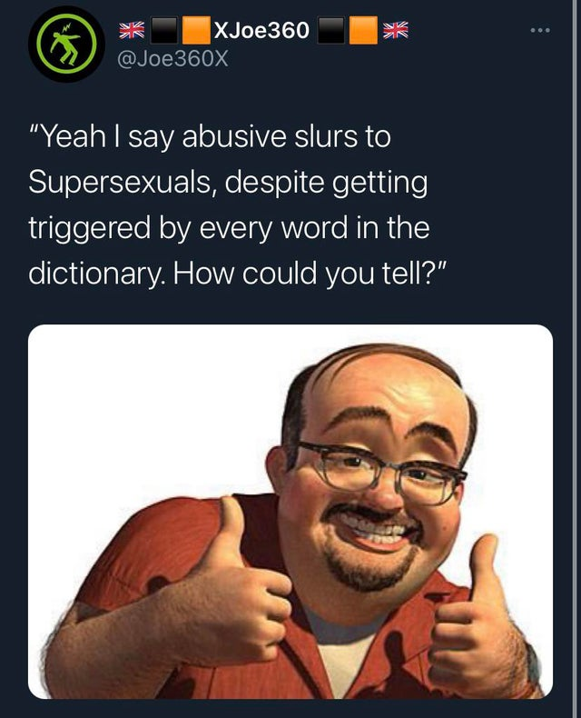
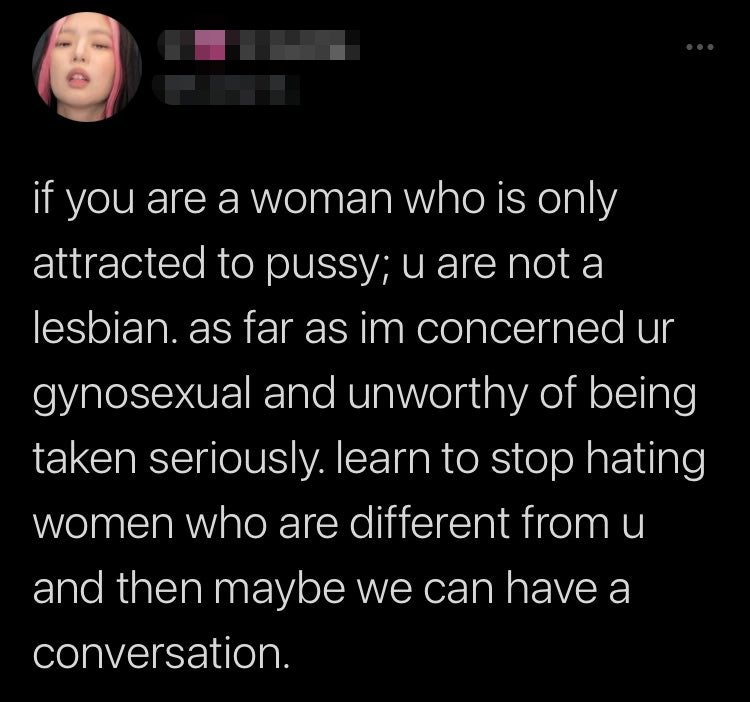
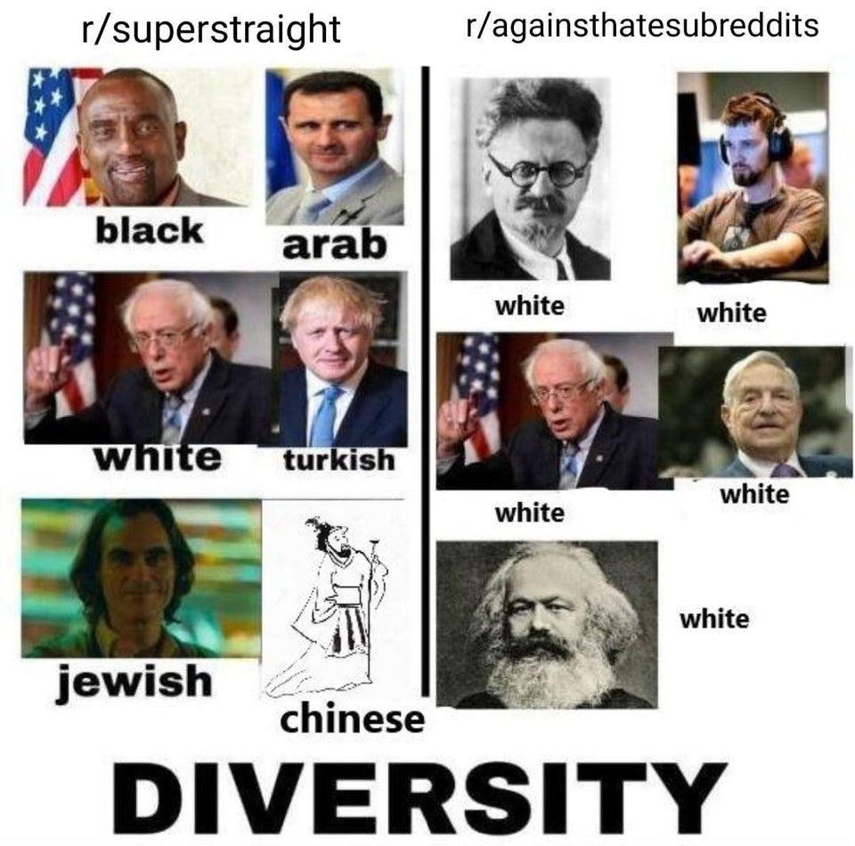I mean 100% the goy who posted this knows.
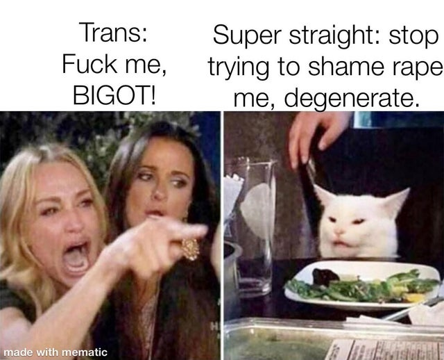
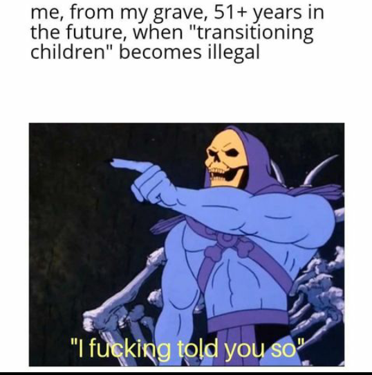
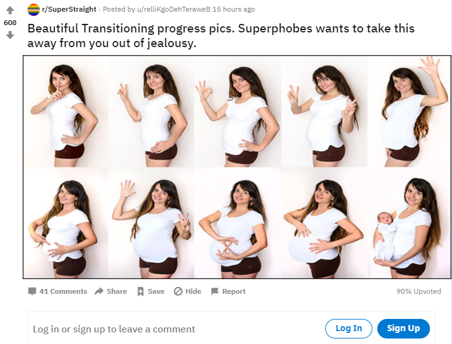
As one fellow BANGer said, this is a reddit burning as glorious as 10,000 suns as it careens towards the banhammer. Truly beautiful.
UPDATE: March 9th, 2021. Two days later it got banned. "This community was banned for promoting hate towards a marginalized or vulnerable group. The community had become increasingly exclusionary with hateful content that is counter to its original satirical intent and was in violation of our policies."
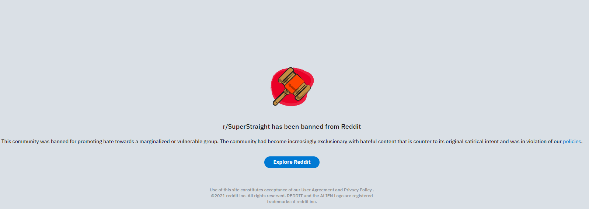
May the gods have mercy on their e-souls, press f to pay respects. They may have been redditors, but to me they were... friends.